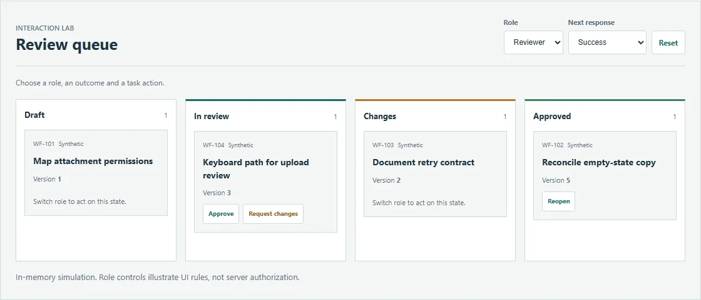
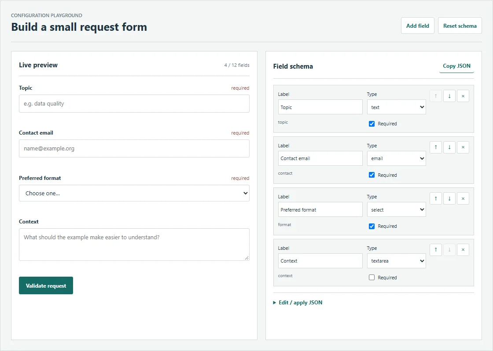
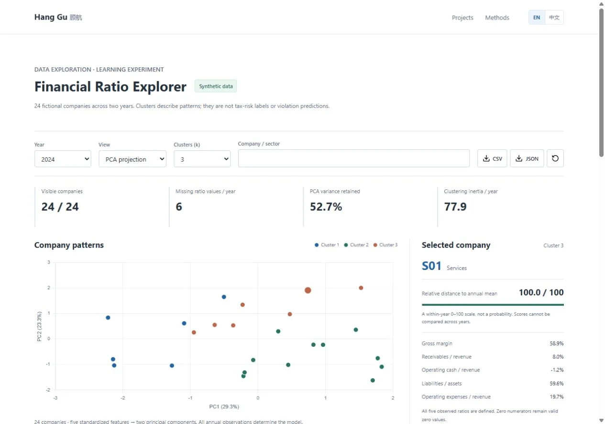
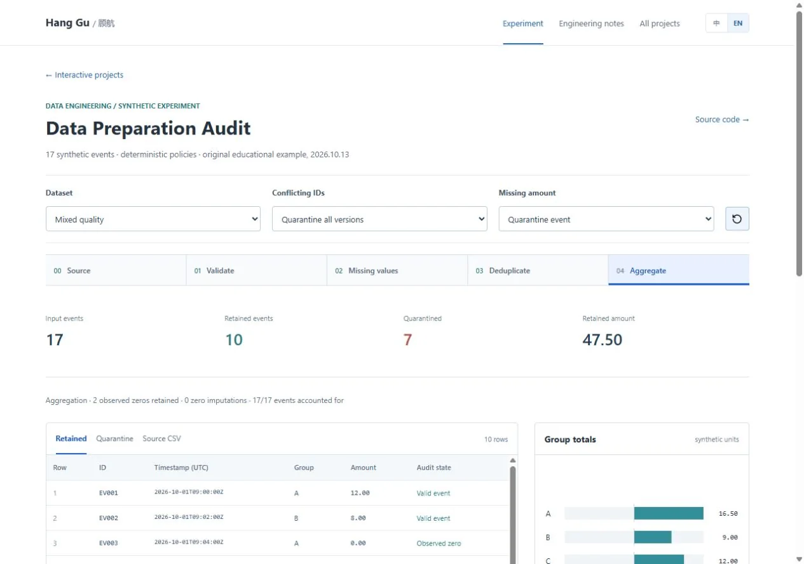
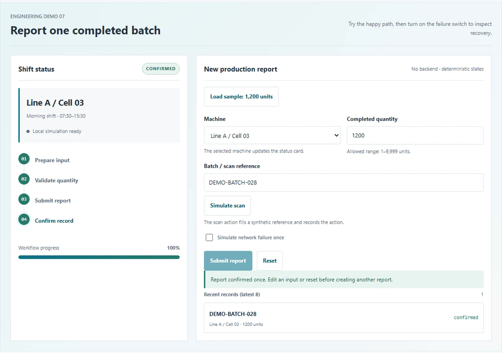
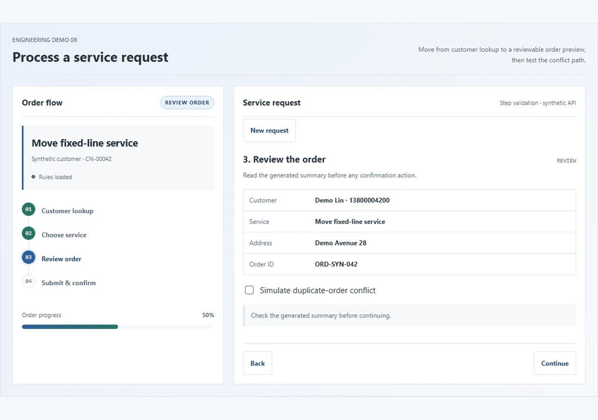

Research question
When labels are scarce, which multimodal gains survive changes in validation, operating points and data artifacts?
See the evidence ↗Your system preference limits motion.
ENGINEERING · DATA · APPLIED RESEARCH
Frontend engineering, data quality and multimodal evaluation.
I am a computer science lecturer and teaching section head at 江苏财经职业技术学院, with an MSc in Computer Science (Data Science) from Universiti Malaya. My background in frontend engineering connects research questions with practical software and data workflows.
Recent research · submitted, not accepted
TFT–GNN for energy–water climate riskAuditing fusion gains in low-resource learningCombining visual and textual representations for document and news understanding.
Validation sensitivity, data artifacts, honest splits and error analysis.
Retrieval, human-reviewed workflows, and reliable interfaces for education and services.
RESEARCH AT A GLANCE
From low-resource news classification to reliable emotion recognition.
When labels are scarce, which multimodal gains survive changes in validation, operating points and data artifacts?
See the evidence ↗First-author revised manuscript: 344 archived runs reanalyzed. Submitted to Neurocomputing; related code is public, the complete revision artifacts are not.
Check code and scope ↗Proposed work: budget-aware adaptation, evidence-aware prediction and controlled continual updates for emotion recognition.
Read the proposed questions ↗00 / SELECTED WORK
A short visual tour of the decisions behind the projects: what was built, what was checked, and where the boundary is.
01 / RESEARCH · SELECTED 5 OF 7 CV RECORDS
Multimodal evaluation and applied climate-risk modeling. Read each research question, method and submission status.
Combines Temporal Fusion Transformer (TFT) and GNN-based Climate Risk Propagation (GNN-CRP) to study temporal risk patterns and interregional cascading risks in renewable energy–water systems across 30 Chinese provinces, 2005–2024.
Reported findings concern regional exposure differences, infrastructure-linked cascading risks and associations between governance measures and resilience. This overview is based on the author-provided abstract; numerical results and evaluation protocols are not supplied.
Reanalyzes 344 archived runs to separate fusion effects, operating-point changes and archive artifacts. FCP is the fusion model under study, not a newly proposed architecture.
Some low-shot GossipCop Macro-F1 advantages track a change in the decision operating point; a higher score alone does not establish a stronger representation.
Archive markers and near-duplicate content can confound evaluation on recollected news datasets.
The manuscript limits training labels but uses a fully labeled validation set. The proposed work will count selection and calibration labels too.
Scope: two English recollected news datasets. Saved hard predictions do not support retrospective AUROC or threshold recalibration. The linked code is related implementation; a complete artifact release for the revised paper is not claimed here.
The September 2026 CV records this as submitted. Author order, current status and an official proceedings or DOI link still require confirmation.
Studies validation sensitivity in news classification with limited labels.
The September 2026 CV records first authorship and acceptance. This page has no linked official proceedings citation or DOI, and the status needs a current check.
Encodes visual and language inputs with VideoMAE and DistilBERT, combining bidirectional cross-attention, gated residuals, text dropout and LSTM temporal modeling to predict behavior classes and trajectory trends.
This method summary is not a reported metric.
Master's research using R and Bayesian networks to study conditional relationships and dental deformities prediction among adolescents.
Five selected records; all seven appear in the academic CV. Climate Risk Management follows the abstract and first-author status confirmed on 27 October 2026. Neurocomputing follows the revised manuscript and 24 October update; other entries follow the supplied CV.
02 / PROJECTS
From research code to tested workflows and inspectable learning experiments.
A mobile-first community adapted from an existing counselor system: membership and moderator roles, event check-in, resource exchange, voice posts, image and file chat, and hometown specialty orders.
Engineering focus: shared Web/H5/WeChat logic, permission checks for private attachments, concurrent order and stock updates, and weather with device-to-network location fallback.
60 backend tests, 17 shared async scenarios and three builds passed. Local pilot; WeChat release and physical-device checks are pending. Screenshots use guest views or synthetic fixtures; payments are settled offline.
KICP / RESEARCH IMPLEMENTATION
models/
CLIP representations
learned prompts
co-attention fusion
knowledge/
retrieval embeddings
train.py → test.pyIllustrative implementation map
A conceptual guide to method components; the complete repository structure and personal code contributions remain to be verified.
Experiments with CLIP features, prompt learning, co-attention and knowledge retrieval. The repository explains the external datasets and model assets needed to run the code.
Related implementation for the revised Neurocomputing study. Read the study overview for findings, scope and the distinction between this code and the complete experimental archive.
KAPT / REPRODUCIBILITY LAB
KANO-derived local study · Synthetic fixtures
A focused engineering study extracted from a local KANO/KAPT project: prompt tensor contracts, explicit early-stopping state and sample-aligned prediction ensembles.
KANO is the third-party upstream. The public lab documents local changes; it does not claim a reproduced molecular benchmark or an original KANO model.
A teaching adaptation of an existing college application: marketing review, server-side pricing and stock, quality gates, fulfillment receipts and service follow-up.
Desktop and mobile interface gallery; business views use synthetic fixtures. Payment and device flows are simulations.
Role-scoped tasks, chat and attachments, plus a release gate binding acceptance results to the exact frontend, backend and browser-report hashes.
Reviewed existing records: 17 browser checks and 18 packaging checks. Full application tests were not rerun for this portfolio update.
COLLEGE ARCHIVE / FILE LIFECYCLE
Interface concept · Not an application screenshot
Teacher and college access scopes, same-name file versioning, review decisions and operation logs. The public case examines consistency across search, downloads and exports.
Source-reviewed case; no integration test rerun. Original configurations, attachments and database are excluded.
FRONTEND & DATA LAB
Synthetic data · Reproducible examples
An interactive dashboard and form, a deterministic data pipeline, annotation quality checks, bounded public-web crawling and model self-study notes.

A React + TypeScript board with explicit role actions, cancellable requests, network-error recovery and version-conflict handling. The live page runs the same bundled React source linked here.
Learning example with synthetic tasks. No backend, authentication, user data or production SLA.

A public form studio derived from the reusable idea of field metadata plus a renderer: add, remove and reorder fields, inspect JSON and validate the same schema that builds the controls.
Synthetic learning example inspired by local Vue form patterns. Original business configuration and data are excluded; complex permissions still need server checks.

A module in the college archive system: account-bound encrypted provider keys, public HTTPS endpoint policy, bounded AI requests and editable PPT drafts. Users review before saving or sending.
Existing feature within the archive system, not a standalone deployed product. Public material is an engineering case, notes and synthetic evidence; mock-provider tests did not use a real key.
RELIABILITY GATE / LEARNING LAB
Synthetic inputs · Inspectable rules
A small interactive lab for the proposed multimodal decision protocol: adjust modality quality, confidence and disagreement, then inspect whether the system outputs or requests review.
Synthetic educational example. It explains state logic and does not report a trained emotion-recognition result.
A small online companion to the engineering case: role views, explicit state transitions, ownership transfer, version conflicts and retry contracts.
The online showcase is a static synthetic sample. The screenshot above comes from the newer local application, not the static demo.
FRONTEND ENGINEERING / ARCHIVE
Historical experience · CV-based descriptions
Production feedback on desktop and mobile, factory administration and fixed-network telecom services. The cases describe business context, my page-development responsibilities and the original technology stack.
Descriptions from a historical CV. Related public demos are separate learning examples.
Start with six selected projects; search and filters cover the full collection.
No matching projects.
ENGINEERING / DELIVERY EVIDENCE
A compact map of how I turn requirements into inspectable interfaces, data workflows, model checks and release evidence.
Dynamic forms, role-scoped states, accessible controls and browser checks make interaction rules visible before release.
Open workflow case ↗Deterministic cleaning, annotation agreement, quarantine records and bounded crawling turn messy inputs into traceable examples.
Open data lab ↗Baselines, validation sensitivity, threshold choice and error analysis keep model demos separate from unsupported performance claims.
Try model experiments ↗Release gates, hashes, scope notes and synthetic fixtures make it clear what was checked, what was excluded and what remains open.
See verification records ↗03 / PROJECT DEMOS & EXPLAINERS
Try production reporting, telecom orders, React workflows and data experiments. Each demo includes a short operating guide, source code and clearly identified synthetic data.
PROJECTS IN MOTION
Four project videos · presenter demo & engineering explainers
SILK ROAD / VIRTUAL PRESENTER
A voiced 2D presenter introduces Silk Road Intelligence, explains a synthetic product and demonstrates coordinated narration, gestures and captions.
Public demo adapted from the local VirtualHost component. Cartoon animation and synthetic speech; no photorealistic model inference.
SILK ROAD / VIRTUAL PRESENTER
A silent replay of six control steps. Follow the highlighted controls and see how the chapter, gesture and playback position change together.
Deterministic replay of the public interface using synthetic content; a text guide accompanies every step.
KAPT / LEARNING LAB
Follow validation loss, the best checkpoint and the patience counter. The best epoch is 5; the stop signal arrives at epoch 8.
Computed by the interactive demo's logic with synthetic values; not a training run.
DATA / QUALITY AUDIT
Watch 17 input rows move through validation, deduplication and conflict checks: 10 retained, 7 quarantined, with an exact total of 47.50.
Generated from the demo pipeline using fictional records; no production data.

01 / FINANCIAL ANALYSIS
24 fictional companies, annual ratios, KMeans clusters and PCA projections.

02 / DATA QUALITY
Missing values, duplicate conflicts, quarantine reasons and exact group totals.
03 / MODEL EVALUATION
Thresholds, ROC / PR curves, confusion matrices and prediction averaging.
04 / REACT ENGINEERING
Click through role actions, cancellable requests, retry states and version conflicts in a bundled React + TypeScript example.
05 / LOW-CODE DESIGN
Edit a JSON-like schema, render the form, validate fields and inspect the generated payload without a backend.
06 / AI PRESENTATION
Play chapters, switch gestures and read bilingual captions in a deterministic presenter demo built from the local component.

07 / ENGINEERING WORKFLOW
Choose a machine, scan a demo batch and submit a quantity. Inspect progress, retry a failed request and see the confirmed record.

08 / ENGINEERING WORKFLOW
Try new install, suspension or relocation. Review the order, trigger a duplicate conflict and resolve it before submitting again.
04 / EXPERIENCE
A path from interface engineering to teaching and applied research.
Lecturer & Teaching Section Head
Computing courses and practical work spanning data collection, storage, analysis and presentation.
Frontend Lead
Configurable forms, workflow interfaces, reusable modules and team coordination.
Frontend Engineer
Frontend Engineer
Existing project experience also includes AI contract management and RAG retrieval tools (in progress), and a modular administrative dashboard (completed). Proprietary implementation details are not part of the public cases.
05 / NOTEBOOK
Questions, implementation choices and checks, connected to the code.
Use the membership project to separate domain state from network, storage and device APIs; keep platform verification explicit.
Separate search ordering, identity changes and page disposal. Check stale success, failure and finally paths.
Label device and network estimates, preserve manual city selection and test searches that finish out of order.
Separate transfer, processing and business attachment; track retries and clean up browser media resources.
Review schema validation, stable field keys, numeric zero and calendar dates using the existing form demo.
A real loading race in the engineering demos led to disabled-by-default controls, versioned assets and delayed-script checks.
Separate static, observed and known-future inputs; work through quantile loss and keep attention explanations separate from causal claims.
Distinguish adjacency, physical connections and similarity; calculate one directed aggregation and design edge ablations without claiming causal propagation.
Separate future-period prediction from unseen-region transfer, purge boundary-crossing label windows and fit preprocessing only on training data.
Turn a demo into a reviewable handoff with input contracts, versioned evidence, failure behavior and a clear separation between teaching output and paper results.
Separate quality, missing inputs, disagreement and calibrated confidence before deciding whether to output or request review.
Turn low-resource comparisons into an auditable ledger instead of reporting training examples alone.
Treat model updates as complete, hashable bundles with a reviewable rollback path.
From chunking and hybrid retrieval to citation checks: an offline example of Recall@k, reciprocal rank and unanswerable queries.
Use cancellation, sequence IDs and explicit view states to prevent stale search results and make error paths testable.
Practice grouping, partitioning and window frames on synthetic transactions, with checks for missing dates and tied values.
Use the small KAPT evaluation utilities to examine why the best epoch, sample identity and decision threshold belong in an experimental protocol.
Use a Silk Road teaching order to distinguish request retries, stock contention and state transitions, then turn those distinctions into testable decisions.
Use bilingual search and video tabs to examine the relationship between state, focus and reduced motion.
Use the data preparation demo to examine IDs, duplicate conflicts and quarantine reasons, then derive boundaries for annotation records and model inputs.
Trace task prompts, node features and gradient paths; distinguish frozen parameters from disabled gradients, and define what component checks can establish.
Connect resource authorization, workflow states and release evidence through the archive and counselor-system cases.
Separate portrait motion transfer, audio-driven lip sync and real-time 3D avatars; follow their inputs, generation steps, quality checks and consent boundaries.
Understand latent denoising and run a reviewable image-generation workflow with fixed prompts, seeds and parameters.
Record model revisions, checkpoint provenance, prompts, parameters, runtime environment and failure cases in a reviewable manifest.
Compiled from public code and project documents; examples, evidence and open questions are distinguished in each article.
Upstream attribution, early stopping, aligned predictions and evidence boundaries.
Undefined denominators, median imputation, standardization and PCA limits.
Schemas, null semantics, deduplication, shuffle and event-time boundaries.
Aligned sample IDs, metric averaging, thresholds, early stopping and test isolation.
Baselines, feature engineering, leakage, thresholds and error analysis.
Coverage, paired agreement, guidelines and a conflict review queue.
Robots rules, same-origin scope, rate limits, JSONL and offline tests.
Window functions, shuffle, skew and reproducible transformation.
Form state, error recovery, keyboard access and performance.
Capacity tests, personal AI access and release checklists.
06 / TOOLKIT